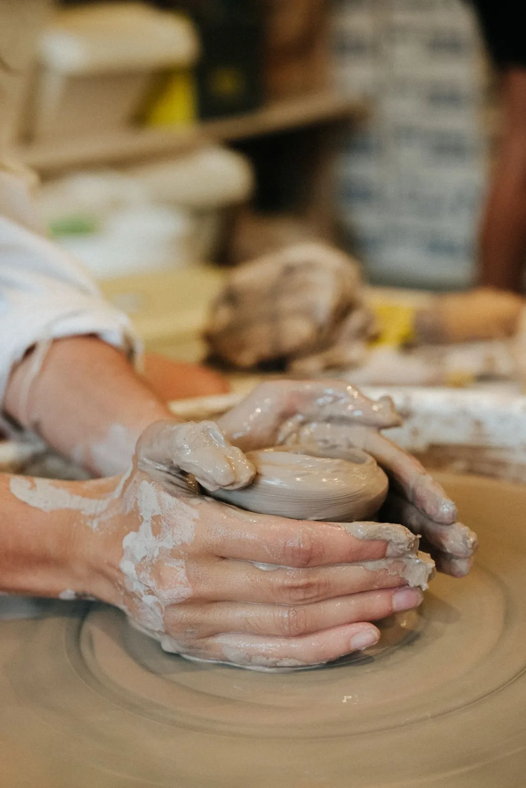
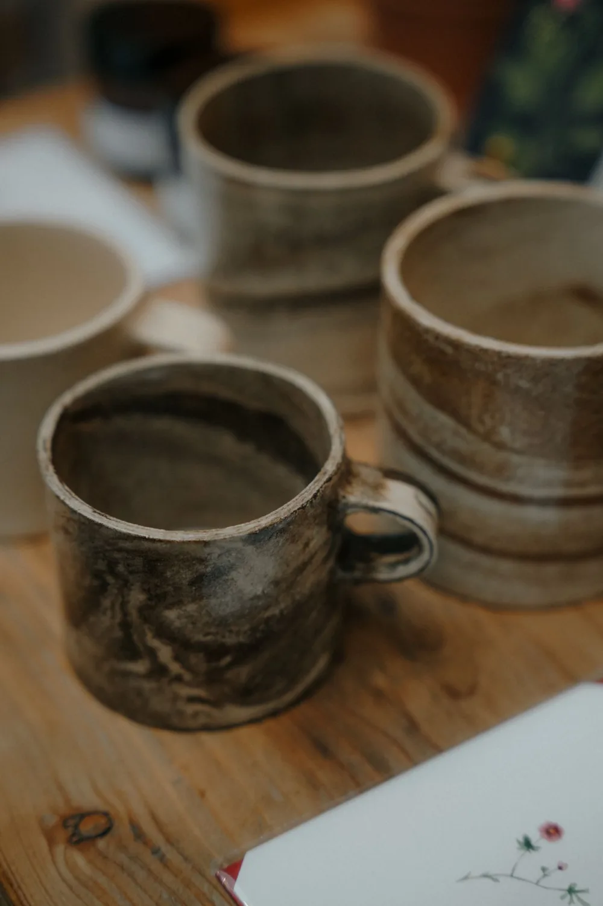

3 óra
Korongozó kóstoló
Egy délután, hogy megismerd az agyagot és elkészítsd az első darabodat.
A kóstoló részleteiKerámiaműhely Szentendrén
Dóra megmutatja, hogyan lesz egy marék agyagból saját kerámiád. Legfeljebb hatan ültök a korongokhoz, így mindenkire jut figyelem.
Megnézem az időpontokat
3 óra
Egy délután, hogy megismerd az agyagot és elkészítsd az első darabodat.
A kóstoló részletei4 hét
Hétről hétre visszaülsz a koronghoz, és egyre önállóbban alakítod az edényedet.
A kurzus részleteiEgyedi időpont
Közös alkotás egy kis csapattal, személyes segítséggel.
A csapatépítő részleteiHa még sosem ültél korongnál, itt az alapoktól indulunk.
Megnézem az időpontokat
Bögrék, tálak és tányérok, amelyeket jó kézbe venni. Ismerd meg Dórát és nézd meg, milyen tárgyak inspirálják a műhely kínálatát.
Megismerem a műhelyt